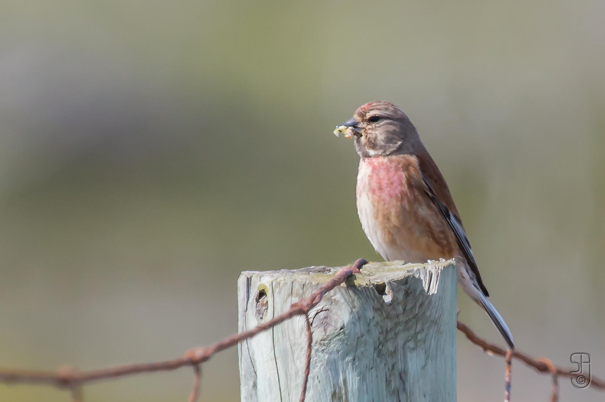

The finch of fields and hedges: resident breeders and winter arrivals from Morocco to the Levant
Identity and recognition
The Common Linnet Linaria cannabina belongs to Fringillidae; older references often use Carduelis cannabina. Breeding males show a red forehead and breast, grey head and chestnut-brown back. Females are grey-brown and more streaked, and juveniles resemble them. The red becomes less conspicuous outside breeding. A grey bill and white markings in the wings and along the forked tail help identification when colours are subdued or the light is poor.
Distinguishing similar birds
Females can resemble other brown finches, particularly Twite Linaria flavirostris. Twite has a yellow bill in winter, with a pink rump in males, whereas Linnet identification benefits from the combination of grey bill, chestnut back and white wing markings. Small streaked birds may also be confused with redpolls of the genus Acanthis. Shape, bill, back and tail should therefore be assessed together, with red plumage interpreted according to age and season.
Habitat, food and behaviour
The species uses open country combining nesting shrubs and seed-bearing vegetation: field edges, hedgerows, pasture, rough grassland and suitable coastal habitats. It feeds chiefly on seeds, often dropping to the ground before returning to an exposed perch. It is sociable, with small groups even during breeding and larger gatherings afterwards. Southern populations are generally more sedentary, while northern birds move southwest. EURING documents European birds reaching northwest Africa, so winter flocks can contain birds with different origins and movement strategies.
Breeding and annual cycle
Nests are placed in dense shrubs or thorny hedges. These provide cover near feeding areas, making the relationship between nest sites and surrounding seed resources important. Females incubate the usual clutch of four or five eggs. BTO reports typical incubation of 12–14 days and nest departure at 13–14 days. Pairs can produce more than one brood. Breeding dates vary with region and altitude; these numerical ranges describe reference breeding data rather than a single calendar for all Arab populations.
Arab-region distribution and seasonality
Morocco’s 2017 checklist records resident breeders and winter visitors. Syria’s 2025 review describes uncommon resident breeding in the west and winter occurrence elsewhere. Jordan lists resident birds and less-common winter visitors. Saudi Arabia’s national reference describes scarce winter visits, especially in the north and Tabuk, occasionally also the Eastern Province. In contrast, Kuwait’s September 2026 list treats the species as a vagrant with seven records.
Ecology and conservation
The global category is Least Concern, but seed resources and nesting cover remain important locally. European farmland research and monitoring link declines to agricultural intensification, reduced food resources and breeding success. Retaining hedges, shrubs and seed-producing field margins helps maintain the complete habitat mosaic. Arab-region monitoring benefits from distinguishing resident breeders from winter arrivals: a seasonal increase in a field does not necessarily represent growth in its local breeding population.
References
AviList — The Global Avian Checklist, v2026
BTO — BirdFacts: Linnet and Twite
BirdWatch Ireland — Linnet
RSPB — Linnet
Game & Wildlife Conservation Trust — Linnet
National Biodiversity Data Centre — Species Profile: Common Linnet
EURING/CMS — Migration Atlas: Common Linnet
Bergier et al. — Liste des oiseaux du Maroc, 2017
Aidek et al. — An Annotated Checklist of the Birds of Syria, 2025
Jordan BirdWatch — Jordan Bird List
The Birds of Saudi Arabia — Volume 2, 2020
KORC — Kuwait Bird List, September 2026
Photo: Stein Arne Jensen — CC0-1.0.